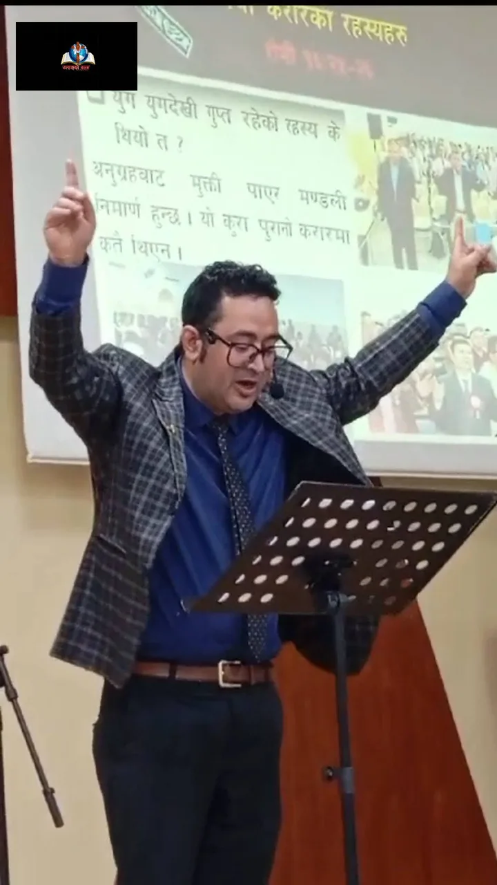
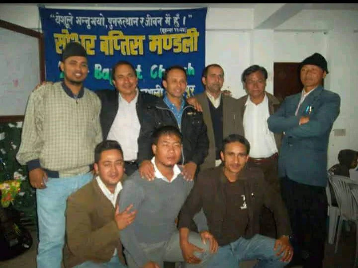
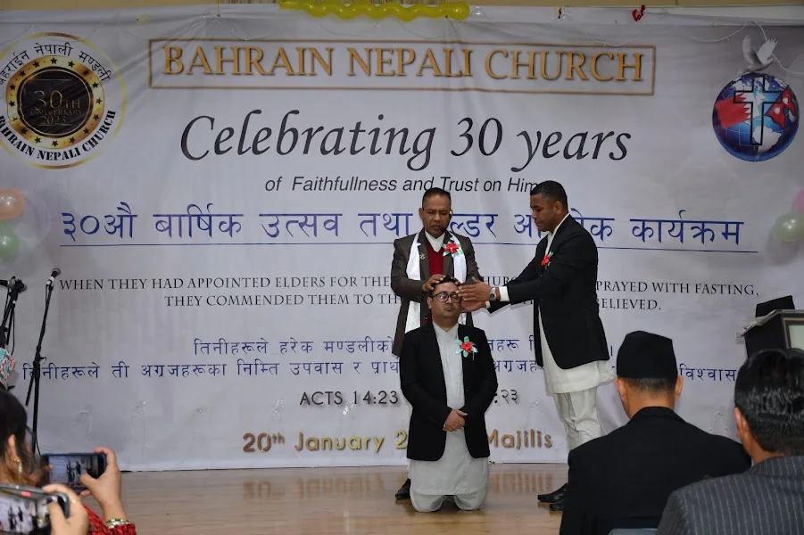
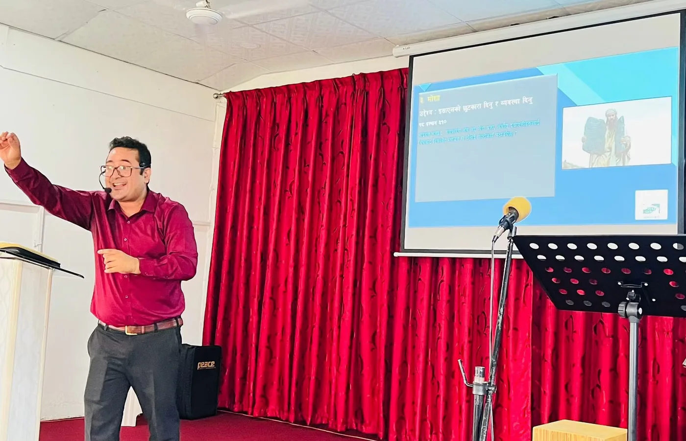
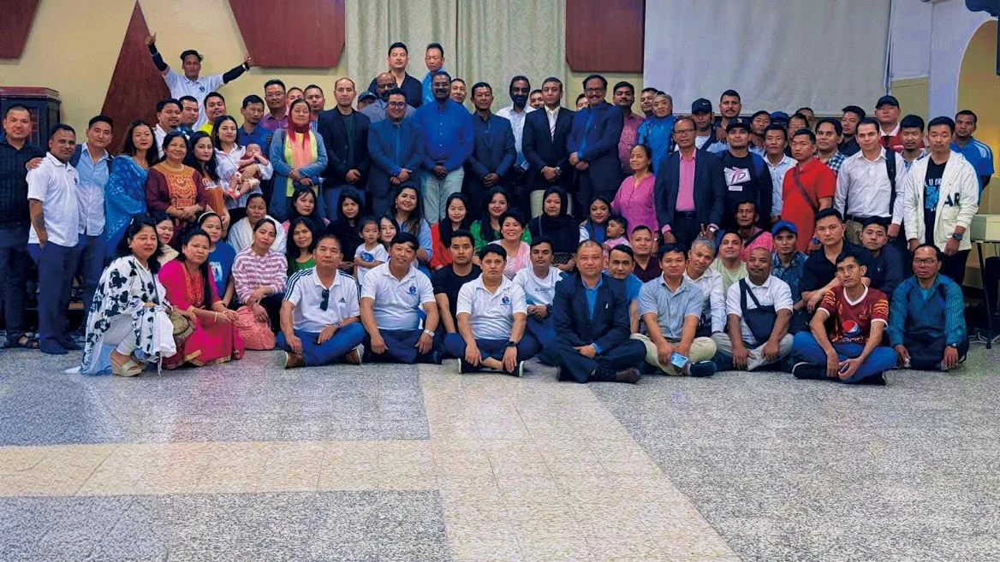

My Story
I am Durga Jung Kunwar, an ordained Elder serving at Bahrain Nepali Church. I was born on 21 November 1986 in Jhapa, Nepal, and grew up in Biratnagar, Morang, which I consider my hometown. I earned a Bachelor of Business Studies (BBS) degree from Tribhuvan University in 2010.
My Christian faith journey began in 2010, when I came to know Jesus Christ through a friend. That same year, I was baptized in Kathmandu, publicly affirming my faith in Christ. As I continued to grow spiritually, I developed a desire to serve God and His people through the local church. My active church ministry began in 2012 at Zoar Church in Tikathali, Lalitpur, where I was ordained as a Deacon.


सोआर चर्च, टीकाथली, ललितपुरमा मेरो सेवकाईका प्रारम्भिक दिनहरू
In 2016, I moved to Bahrain and joined Bahrain Nepali Church, where I continued serving God through the local church. During my years in Bahrain, God broadened and strengthened my ministry, giving me greater opportunities to preach, teach the Bible, support believers, participate in church leadership, and serve the Nepali-speaking Christian community. In 2023, I was ordained as an Elder at Bahrain Nepali Church, where I continue to serve in church leadership and various areas of ministry.

In Nepal, I am also involved with Full Gospel Tabernacle (FGT) Church in Biratnagar and participate in its ministry through Bible teaching and Christian service.

फुल गस्पेल ट्याबरनेकल (एफजीटी) चर्च, विराटनगरमा प्रवचन दिँदै
Alongside my church ministry, I have continued pursuing theological education. I completed the coursework for my Master of Divinity (M.Div.) at Nepali International Theological Seminary in 2026. I am currently writing my thesis on “Foreign Job and Ministry,” and my degree is expected to be formally conferred at the convocation in December 2026. My theological education has deepened my understanding of Scripture and strengthened my commitment to faithful Bible teaching, responsible church leadership, and the spiritual growth of believers.
Translation is another important part of my ministry. I have translated more than 50 books from English into Nepali with the desire to make helpful Christian teaching and theological resources available to Nepali-speaking readers. Thirteen of my English-to-Nepali translated books, together with eight Hindi books, are currently featured on this website. Through this work, I hope to contribute to the spiritual growth of individuals, churches, ministry leaders, and theological students.
I also have a strong interest in technology and software development. As a self-taught programmer, I have studied software development, Python, Java, and webpage design through independent learning and various online courses. I apply these skills to creating websites, software projects, and practical digital tools that can support churches, Christian ministries, and Nepali-speaking communities.
My desire is to use the gifts, education, experience, and opportunities God has given me to communicate biblical truth clearly, strengthen churches, equip and encourage believers, make useful Christian resources accessible, and develop practical digital solutions for ministry. Through preaching, Bible teaching, translation, theological education, church leadership, and technology, I remain committed to serving God and His people faithfully.
मेरो जीवन र सेवकाई
म दुर्गा जङ्ग कुँवर हुँ र हाल बहराइन नेपाली चर्चमा अभिषिक्त एल्डरका रूपमा सेवा गरिरहेको छु। मेरो जन्म २१ नोभेम्बर १९८६ मा नेपालको झापामा भएको हो। म मोरङ जिल्लाको विराटनगरमा हुर्किएँ, जुन मेरो गृहनगर हो। मैले सन् २०१० मा त्रिभुवन विश्वविद्यालयबाट ब्याचलर अफ बिजनेस स्टडिज (बीबीएस) उपाधि प्राप्त गरेँ।
सन् २०१० मा एक जना मित्रमार्फत मैले येशू ख्रीष्टलाई चिन्ने अवसर पाएँ र मेरो ख्रीष्टियन विश्वासको यात्रा सुरु भयो। त्यही वर्ष मैले काठमाडौंमा बप्तिस्मा लिएर येशू ख्रीष्टमाथिको आफ्नो विश्वासलाई सार्वजनिक रूपमा स्वीकार गरेँ। आत्मिक रूपमा बढ्दै जाँदा स्थानीय मण्डलीमार्फत परमेश्वर र उहाँका जनहरूको सेवा गर्ने इच्छा ममा विकास भयो। मेरो सक्रिय मण्डली सेवकाई सन् २०१२ मा ललितपुरको टीकाथलीस्थित सोआर चर्चबाट सुरु भयो, जहाँ मलाई डिकन पदमा अभिषेक गरिएको थियो।
सन् २०१६ मा म बहराइन आएँ र बहराइन नेपाली चर्चमा आबद्ध भई स्थानीय मण्डलीमार्फत परमेश्वरको सेवा गर्न थालेँ। बहराइनमा बिताएका वर्षहरूमा परमेश्वरले मेरो सेवकाईलाई विस्तार र सुदृढ पार्दै प्रवचन, बाइबल शिक्षण, विश्वासीहरूको सहायता, मण्डली नेतृत्व तथा नेपालीभाषी ख्रीष्टियन समुदायको सेवामा सहभागी हुने थप अवसरहरू दिनुभयो। सन् २०२३ मा मलाई बहराइन नेपाली चर्चमा एल्डर पदमा अभिषेक गरियो। हाल म यस मण्डलीको नेतृत्व तथा विभिन्न सेवकाईहरूमा निरन्तर सेवा गरिरहेको छु।
नेपालमा पनि म विराटनगरस्थित फुल गस्पेल ट्याबरनेकल (एफजीटी) चर्चसँग आबद्ध भई बाइबल शिक्षण तथा ख्रीष्टियन सेवामार्फत यसको सेवकाईमा सहभागी हुँदै आएको छु।
मण्डली सेवकाईसँगै मैले धर्मशास्त्रीय अध्ययनलाई पनि निरन्तरता दिएको छु। मैले सन् २०२६ मा नेपाली इन्टरनेशनल थियोलोजिकल सेमिनरीबाट मास्टर अफ डिभिनिटी (एम.डिभ.) को पाठ्यक्रम पूरा गरेको छु। हाल म “Foreign Job and Ministry” विषयमा शोधप्रबन्ध लेखिरहेको छु, र डिसेम्बर २०२६ मा आयोजना हुने दीक्षान्त समारोहमा औपचारिक रूपमा उपाधि प्राप्त गर्ने अपेक्षा गरेको छु। धर्मशास्त्रीय शिक्षाले बाइबलप्रतिको मेरो बुझाइलाई गहिरो बनाउनुका साथै विश्वासयोग्य बाइबल शिक्षण, जिम्मेवार मण्डली नेतृत्व तथा विश्वासीहरूको आत्मिक वृद्धिप्रतिको मेरो प्रतिबद्धतालाई अझ सुदृढ बनाएको छ।
अनुवाद मेरो सेवकाईको अर्को महत्त्वपूर्ण क्षेत्र हो। नेपालीभाषी पाठकहरूका लागि उपयोगी ख्रीष्टियन शिक्षा तथा धर्मशास्त्रीय सामग्री उपलब्ध गराउने उद्देश्यले मैले अङ्ग्रेजीबाट नेपालीमा ५० भन्दा बढी पुस्तकहरू अनुवाद गरेको छु। तीमध्ये अङ्ग्रेजीबाट नेपालीमा अनुवाद गरिएका १३ पुस्तक र हिन्दी भाषाका ८ पुस्तक हाल यस वेबसाइटमा समावेश गरिएका छन्। यस कार्यमार्फत व्यक्ति, मण्डली, सेवकाईका अगुवा तथा धर्मशास्त्रका विद्यार्थीहरूको आत्मिक वृद्धिमा योगदान पुर्याउने मेरो चाहना छ।
प्रविधि तथा सफ्टवेयर विकासमा पनि मेरो गहिरो रुचि छ। स्वअध्ययनमार्फत प्रोग्रामिङ सिक्दै मैले स्वतन्त्र अध्ययन तथा विभिन्न अनलाइन पाठ्यक्रमहरूबाट सफ्टवेयर विकास, पाइथन, जाभा र वेबसाइट डिजाइनसम्बन्धी व्यावहारिक ज्ञान हासिल गरेको छु। यी सीपहरूलाई म मण्डली, ख्रीष्टियन सेवकाई तथा नेपालीभाषी समुदायलाई सहयोग पुर्याउने वेबसाइट, सफ्टवेयर परियोजना तथा व्यावहारिक डिजिटल उपकरणहरू विकास गर्न प्रयोग गर्दछु।
परमेश्वरले दिनुभएको वरदान, शिक्षा, अनुभव र अवसरहरूलाई बाइबलीय सत्य स्पष्ट रूपमा प्रस्तुत गर्न, मण्डलीहरूलाई सुदृढ बनाउन, विश्वासीहरूलाई सुसज्जित र उत्साहित गर्न, उपयोगी ख्रीष्टियन सामग्री सहज रूपमा उपलब्ध गराउन तथा सेवकाईका लागि व्यावहारिक डिजिटल समाधानहरू विकास गर्न प्रयोग गर्नु मेरो चाहना हो। प्रवचन, बाइबल शिक्षण, अनुवाद, धर्मशास्त्रीय शिक्षा, मण्डली नेतृत्व तथा प्रविधिमार्फत म परमेश्वर र उहाँका जनहरूको विश्वासयोग्य सेवा गर्न प्रतिबद्ध छु।
